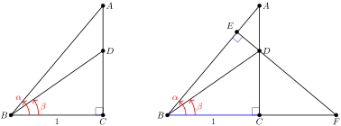

Identities are useful for changing from one form to another when solving equations, for simplifying expressions, and for finding exact values for trigonometric functions.
it is not true in general that \(\cos (\alpha + \beta)\) is equal to \(\cos (\alpha) + \cos (\beta)\) for all angles \(\alpha\) and \(\beta\text{,}\) or that \(\sin (\alpha + \beta)\) is equal to \(\sin (\alpha) + \sin (\beta)\text{.}\)
Using one of the calculator keys \(SIN^{-1},~ COS^{-1}\text{,}\) or \(TAN^{-1}\) performs the inverse operation for computing a sine, cosine or tangent.
Two functions are called inverse functions if each "undoes" the results of the other function.
If \(y=f(x)\) is a function, we can often find a formula for the inverse function by interchanging \(x\) and \(y\) in the formula for the function, and then solving for \(y\text{.}\)
The graphs of \(y=f(x)\) and \(y=f^{-1}(x)\) are symmetric about the line \(y=x\text{.}\)
The domain of \(f^{-1}\) is the same as the range of \(f\text{,}\) and the range of \(f^{-1}\) is the same as the domain of \(f\text{.}\)
Horizontal Line Test.
A function passes the Horizontal Line Test if every horizontal line intersects the graph at most once. In that case, there is only one \(x\)-value for each \(y\)-value, and the function is called one-to-one.
A function \(f\) has an inverse function if and only if \(f\) is one-to-one.
Definitions of the inverse trig functions.
\begin{equation*}
\sin^{-1}(x)=\theta~~~\text{if and only if}~~~~\sin (\theta) = x~~~\text{and}~~~\dfrac{-\pi}{2} \le \theta \le \dfrac{\pi}{2}
\end{equation*}
\begin{equation*}
\cos^{-1}(x)=\theta~~~\text{if and only if}~~~~\cos (\theta) = x~~~\text{and}~~~0 \le \theta \le \pi
\end{equation*}
\begin{equation*}
\tan^{-1}(x)=\theta~~~\text{if and only if}~~~~\tan (\theta) = x~~~\text{and}~~~\dfrac{-\pi}{2} \lt \theta \lt \dfrac{\pi}{2}
\end{equation*}
Inverse Trigonometric Functions.
\begin{equation*}
\sin\left(\sin^{-1}(x)\right) = x~~~~\text{for}~ -1 \le x \le 1
\end{equation*}
\begin{equation*}
\cos\left(\cos^{-1}(x)\right) = x~~~~\text{for}~ -1 \le x \le 1
\end{equation*}
\begin{equation*}
\sin^{-1}(\sin (x))~~\text{may not be equal to}~x
\end{equation*}
\begin{equation*}
\cos^{-1}(\cos (x))~~\text{may not be equal to}~x
\end{equation*}
\begin{equation*}
\tan^{-1}(\tan (x))~~\text{may not be equal to}~x
\end{equation*}
The inverse sine function is also called the arcsine function and denoted by \(\arcsin (x)\text{.}\) Similarly, the inverse cosine function is sometimes denoted by \(\arccos (x)\text{,}\) and the inverse tangent function by \(\arctan (x)\text{.}\)
When simplifying expressions involving inverse trigonometric functions, it can often clarify the computations if we assign a name such as \(\theta\) or \(\phi\) to the inverse trig value.
Three More Functions.
If \(\theta\) is an angle in standard position, and \(P(x,y)\) is a point on the terminal side, then we define the following functions.
We can obtain graphs of the secant, cosecant, and cotangent functions as the reciprocals of the three basic functions.
We can solve equations of the form \(\sec (\theta) = k\text{,}\)\(\csc (\theta) = k\text{,}\) and \(\cot (\theta) = k\) by taking the reciprocal of both sides.
If we know one of the trigonometric ratios for an angle, we can use identities to find any of the others.
This problem outlines a geometric proof of difference of angles formula for tangent.
In the figure below left, \(\alpha=\angle ABC\) and \(\beta = \angle DBC\text{.}\) Write expressions in terms of \(\alpha\) and \(\beta\) for the sides \(AC,~DC,\) and \(AD\text{.}\)

In the figure above right, explain why \(\triangle ABC\) is similar to \(\triangle FBE\text{.}\)
Explain why \(\angle FDC = \alpha\text{.}\)
Write an expression in terms of \(\alpha\) and \(\beta\) for side \(CF\text{.}\)
Explain why \(\triangle FBE\) is similar to \(\triangle ADE\text{.}\)
Let \(L_1\) and \(L_2\) be two lines with slopes \(m_1\) and \(m_2\text{,}\) respectively, and let \(\theta\) be the acute angle formed between the two lines. Use an identity to show that
For Problems 85–86, use the fact that if \(\theta\) is one angle of a triangle and \(s\) is the length of the opposite side, then the diameter of the circumscribing circle is
In the figure above, find the diameter of the circumscribing circle, the angle \(\alpha\text{,}\) and the sides \(a\) and \(b\text{.}\)
86.
A triangle has one side of length 17cm and the angle opposite is \(26\degree\text{.}\) Find the diameter of the circle that circumscribes the triangle.